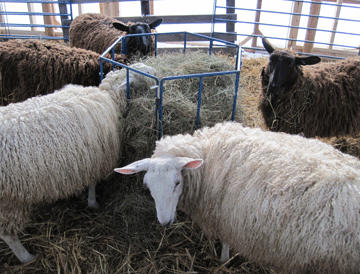

| The Sheep
Why sheep? With two acres open and some areas wet, smaller animals made sense. I bought five Border Leicester ewe lambs (four months old) in July. I had summer to learn about grazing and handling them, a winter feeding hay, and a second summer of grazing. In fall, their second year, they were bred, lambing the next spring. I used a Coopworth ram to service the ewes for the first two breeding years. By paying a stud fee, I did not have to keep and feed a ram for two years. |
||||||
| Border Leicesters have clean faces and legs (no fleece), and Roman noses. | ||||||
|  | ||||||
| Mr. Lucky the Coopworth ram. | ||||||